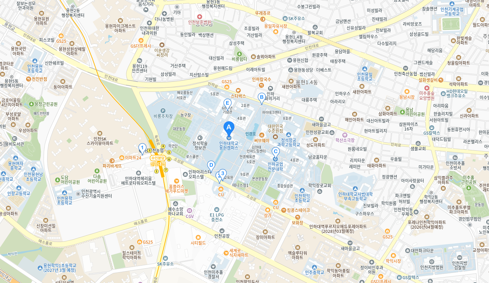

찾아오시는 길

인하대학교 용현캠퍼스
(22212) 인천광역시 미추홀구 인하로 100
버스노선 안내
인하대학교 하차
광역 1601(서울역), 9200(강남역)
시내 5, 5-1, 8, 9, 13, 27, 46, 111-2
타지역 3001(광명역)
마을 511, 515, 516, 518(주안역), 512(제물포역), 517, 519(동인천역)
급행 908(송도신도시공영차고지)
광역 1601(서울역), 9200(강남역)
시내 5, 5-1, 8, 9, 13, 27, 46, 111-2
타지역 3001(광명역)
마을 511, 515, 516, 518(주안역), 512(제물포역), 517, 519(동인천역)
급행 908(송도신도시공영차고지)
※ 버스노선정보안내
인천버스정보관리시스템 : http://bus.incheon.go.kr
인천버스노선안내 : http://www.intis.net
지하철 노선안내
(1호선) 주안역 1번, 2번 출구
· 1번 출구 : 마을버스 511, 515, 516, 518 / 시네버스 5-1, 46
· 2번 출구 : 학교 무료 셔터버스
· 버스 여유 소요 : 여유 20분
(3호선) 인하대역 4번, 5번 출구
· 4번 : 운동장 방향
· 5번 : 정문 방향
· 도발 예시 1분
· 1번 출구 : 마을버스 511, 515, 516, 518 / 시네버스 5-1, 46
· 2번 출구 : 학교 무료 셔터버스
· 버스 여유 소요 : 여유 20분
(3호선) 인하대역 4번, 5번 출구
· 4번 : 운동장 방향
· 5번 : 정문 방향
· 도발 예시 1분
※ 전철 노선 정보안내 : http://www.seoulmetro.co.kr
무료셔틀버스 안내
승용차(고속도로) 안내
경인고속도로
・ 도화IC : 첫 번째 삼거리 우회전 → 주안역 우회전 → 구시민회관 사거리 우회전 → 제일시장 사거리 최회전 → 인하대학교 정문
・ 인천IC : 농안삼거리 우회전 → 남부역 사거리 직진 → 용현사거리 우회전 → 인하대학교 정문
제2경인고속도로
・ 문학IC : 주안 방향 → 첫 번째 사거리 지나 U턴 → 신호등 건너 인하대학교 정문
김포공항에서 오시는 길
・ 김포공항 → 신월IC → 경인고속도로 → 도화IC → 인하대학교 정문
・ 도화IC : 첫 번째 삼거리 우회전 → 주안역 우회전 → 구시민회관 사거리 우회전 → 제일시장 사거리 최회전 → 인하대학교 정문
・ 인천IC : 농안삼거리 우회전 → 남부역 사거리 직진 → 용현사거리 우회전 → 인하대학교 정문
제2경인고속도로
・ 문학IC : 주안 방향 → 첫 번째 사거리 지나 U턴 → 신호등 건너 인하대학교 정문
김포공항에서 오시는 길
・ 김포공항 → 신월IC → 경인고속도로 → 도화IC → 인하대학교 정문
콘텐츠 담당
비서실
032-860-7001
수정일
2025-03-14